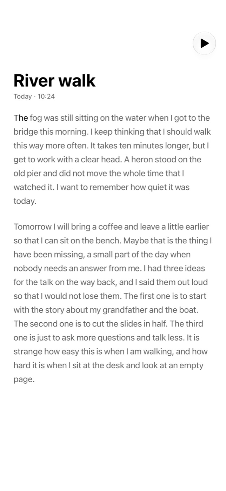
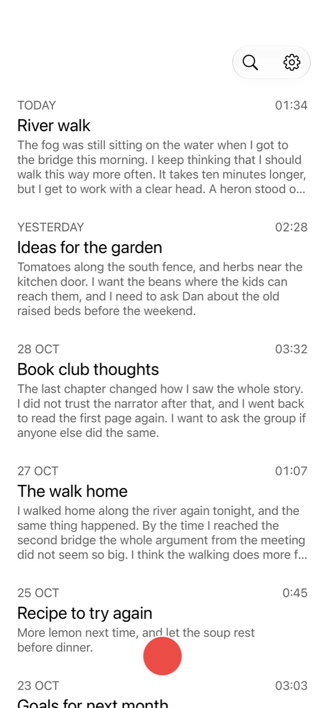
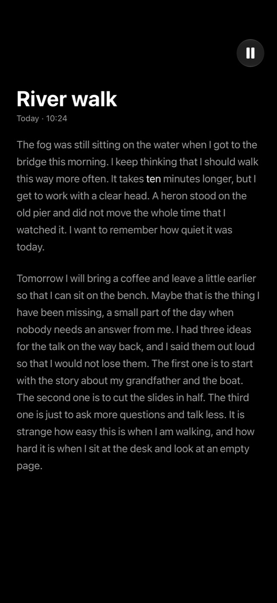
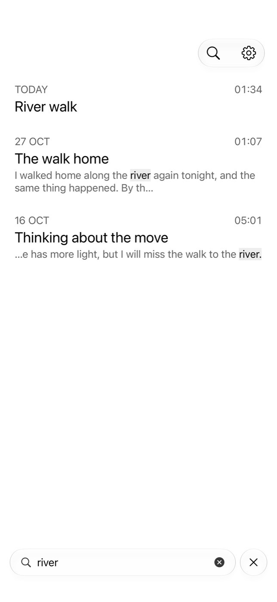
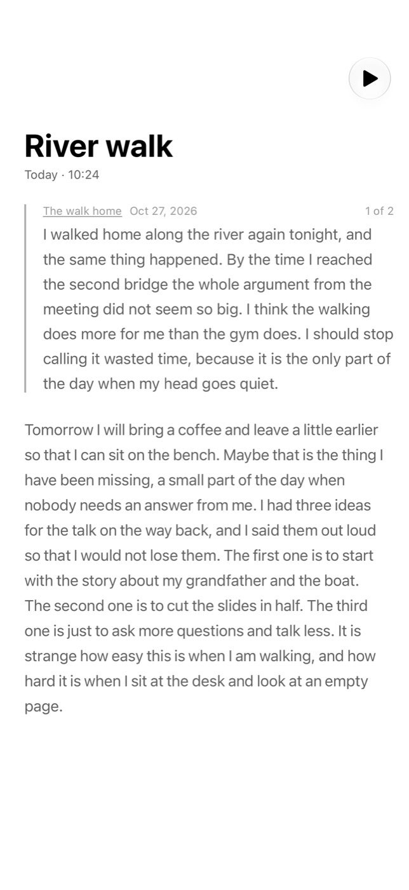
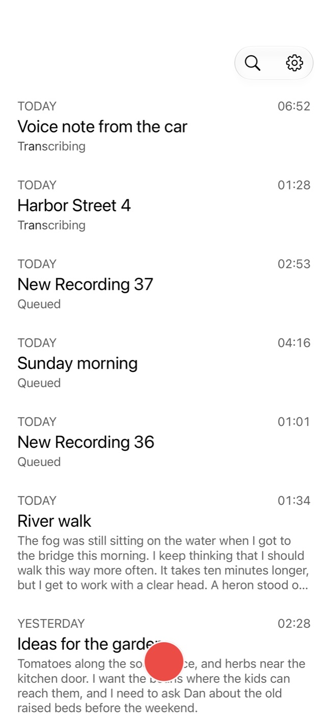
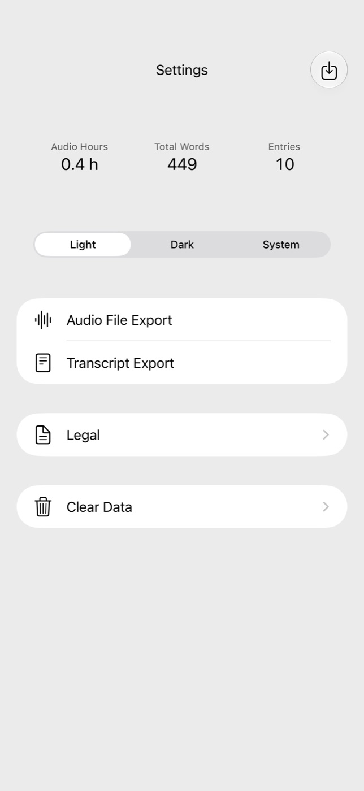

Transcripts
Every word,
written down
MemoHelper transcribes each recording on your device and turns it into readable text.
9:41

A voice-first journal for iPhone and iPad. Import recordings from Voice Memos, transcribe them on your device, and search your journal with word-level playback.

Transcripts
MemoHelper transcribes each recording on your device and turns it into readable text.

Playback
Playback highlights each word as you hear it. Tap any word to jump to that moment.

Search
Find a note by any word in it, then play the recording from that word.

Related notes
Swipe a passage to see related passages from your other notes.

Import
Share a recording from Voice Memos, or import with Shortcuts or from the Files app.

Export
Take your recordings and your text with you whenever you want.

Privacy
No account. No servers. No ads. Transcription, search, and related notes run on your device.
Ideas
Talk while you walk, and read it back later.